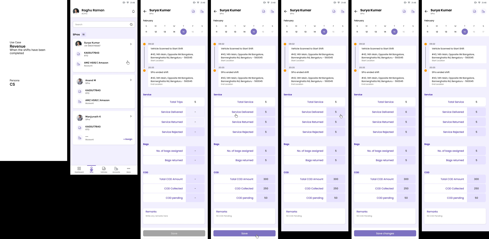

One platform, four very different users
3Eco runs last-mile delivery operations, and the hard part was the audience: coordinators, drivers, compliance staff, and back-office admins all use it daily, each on a different device with different goals. I had to design four distinct surfaces that still felt like one product.
The thread tying them together was designing around each persona's real workflow instead of forcing them into one generic interface.

Software for the people who actually run the operation
3Eco is a B2B platform that helps last-mile delivery operators run their daily business, assigning drivers (Service Professionals, or SPros) to routes, tracking deliveries and returns, doing vehicle compliance checks, processing penalties, reconciling cash-on-delivery. The end customer is the delivery business; the daily users are the coordinators, drivers, compliance staff, and back-office admins inside it. Each persona uses a different surface, on a different device, with very different goals.
Four surfaces, one coherent product
A coordinator at a desk, a driver on a phone mid-route, a compliance officer working through checklists, an admin reconciling cash, designing for all four without the product fragmenting was the core problem. Each needed its own density, layout, and rhythm, yet had to read as one system.
Meet each user where they actually work
Rather than a one-size interface, I shaped each surface around its real context of use, motion and glanceability for drivers, density and control for coordinators, structure and auditability for compliance, reconciliation clarity for admins. A shared component and language layer held it together.
Compliance checklists and timelines
The compliance surfaces turned regulatory steps into clear, trackable checklists and timelines, so staff always know what's done, what's pending, and what's overdue.


Penalties and cash reconciliation
Back-office flows for penalties and revenue reconciliation were designed for accuracy under pressure, every adjustment visible, every number traceable.


Designing for difference, not the average
The instinct in B2B is to build one screen for everyone. 3Eco taught me the opposite: respect how different each role's day actually is, and let a shared system, not a shared layout, create coherence. Designing for the real workflow beat designing for the average user.